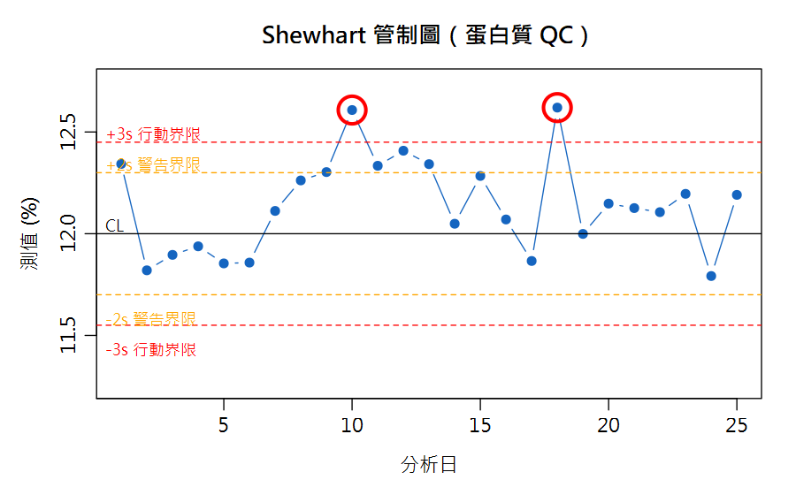
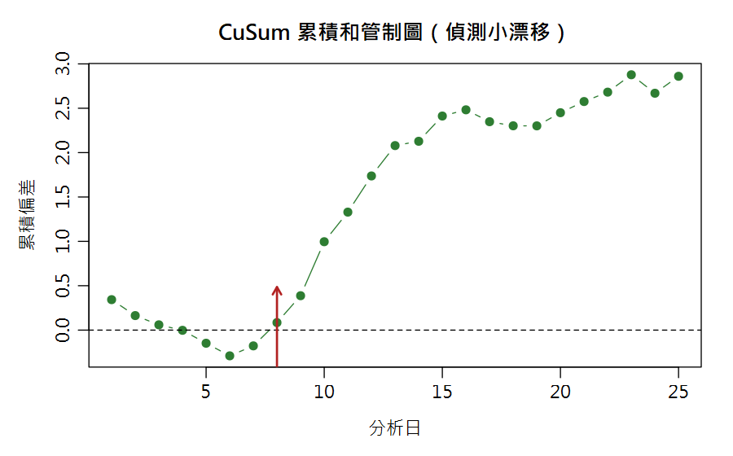

Part 1 數據品管統計（Nielsen's Food Analysis 第4章）／第 3 章
方法能力指標與品質管制 Sensitivity, LOD/LOQ, Specificity & Control Charts
稽查員問：「你們方法驗證過的最低可測濃度是多少？」「今天的儀器正常嗎？」——這兩個問題答不出來，報告就無效。這一章就是答案。
🔑 課前暖身
儀器像耳朵——太小的聲音聽不到（LOD），剛好聽到的也數不準（LOQ）。
本章教你評估方法的能力極限，並給它做「每日體檢」：管制圖一畫，方法壞掉立刻現形。
本章新詞先認識：空白樣品＝不含待測物的對照組；LOD＝偵測極限（聽得到）；LOQ＝定量極限（量得準）；管制圖＝每天記一點的體檢圖。
名詞卡住了？回 Ch0 名詞圖鑑 查白話解釋與比喻。
本章新詞先認識：空白樣品＝不含待測物的對照組；LOD＝偵測極限（聽得到）；LOQ＝定量極限（量得準）；管制圖＝每天記一點的體檢圖。
名詞卡住了？回 Ch0 名詞圖鑑 查白話解釋與比喻。
學習目標
- 區分「靈敏度」與「偵測極限 LOD」
- 會用空白標準差計算 LOD = 空白 + 3SDblk、LOQ = 空白 + 10SDblk
- 認識專一性（specificity）在食品基質的意義
- 會建立 Shewhart 管制圖並判讀警告／行動界限
3.1 靈敏度 ≠ 偵測極限
靈敏度 Sensitivity
濃度改變時，儀器訊號跟著改變的幅度（校正曲線斜率）。 可依需求調高或調低。
例：把 HPLC 靈敏度調低，一次就能測寬濃度範圍。
濃度改變時，儀器訊號跟著改變的幅度（校正曲線斜率）。 可依需求調高或調低。
例：把 HPLC 靈敏度調低，一次就能測寬濃度範圍。
偵測極限 LOD
「能被偵測到的最低量」，由空白訊號的變異決定。 空白越吵（SD 大），LOD 越差。
常用規則：訊噪比 S/N ≥ 3。
「能被偵測到的最低量」，由空白訊號的變異決定。 空白越吵（SD 大），LOD 越差。
常用規則：訊噪比 S/N ≥ 3。
XLD = XBlk + 3 × SDBlk
Nielsen 式 (4.19)：LOQ（定量極限）則用 10 × SDBlk
- 低於 LOD：報「未檢出（ND）」，無法確認存在
- LOD ~ LOQ 之間：可定性，但數字不可靠
- 高於 LOQ：才能安心報告定量值
另一個更嚴謹的指標是 MDL（方法偵測極限，EPA 定義）： 用「含分析物的真實基質樣品」重複分析 ≥7 次，MDL = t(n−1, 0.99) × SD， 涵蓋整個方法流程（萃取、淨化、上機）的變異。
3.2 專一性 Specificity
專一性＝方法只偵測「目標成分」的程度。食品分析常見兩難：
- 粗脂肪：定義就是「有機溶劑可溶物」，方法廣反而是對的（經驗方法）
- 冰淇淋中的乳糖：基質還有其他糖類，方法不夠專一就會高估乳糖
🔗 與不準度的連結
專一性不足造成的干擾，是 Part 2 量測不確定度中「基質效應 / 偏倚」的來源之一（QUAM §6.7）。
3.3 Shewhart 管制圖：日常品質的眼睛
每天用QC 標準品（已知值）隨行分析，把結果按時間畫圖： 中心線 CL＝目標值，±2s 警告界限、±3s 行動界限。

圖 3-1 Shewhart 管制圖：紅圈為超出 ±3s 行動界限的失控點（本課程模擬數據）
🚨 判讀規則
① 任一點超出 ±3s → 立即停線找根本原因（root cause）
② 連續 7 點在同一側、或連續上升/下降 → 有系統性漂移（即使未超界）
③ 超過 ±2s 但未達 ±3s → 提高警覺，加測確認
② 連續 7 點在同一側、或連續上升/下降 → 有系統性漂移（即使未超界）
③ 超過 ±2s 但未達 ±3s → 提高警覺，加測確認
把三條規則對到本例 25 天的模擬數據上：規則①（超出 ±3s 行動界限）只抓到第 10、18 天；規則③（超出 ±2s 警告界限、但未達 ±3s）抓到第 1、9、11、12、13 天。但如果只盯著「有沒有點超出界限」，會完全漏掉規則② 能抓到的訊號——第 7~16 天，連續 10 天的測值全部落在中心線 12.00% 上方，這種「連續同側」 本身就是系統性偏移的特徵，即使這 10 天裡有 8 天連 ±2s 警告線都沒碰到。
CuSum（累積和）圖把每天的偏差累加，對「小而持續」的漂移特別敏感—— 本例的 +0.28% 漂移（第 8~11 天）在 Shewhart 圖上要到第 9 天才觸及 ±2s 警告線、第 10 天才真正衝出 ±3s 行動界限； CuSum 圖卻從第 8 天斜率就明顯轉正、之後持續攀升，比 Shewhart 更早、更清楚地顯示這是「系統性漂移」而非單點雜訊：

圖 3-2 CuSum 累積和管制圖（與圖 3-1 同一組數據）
# --- LOD / LOQ ---
set.seed(42)
blank <- round(rnorm(20, 0.008, 0.0022), 4) # 空白 20 次讀值
LOD <- mean(blank) + 3 * sd(blank)
LOQ <- mean(blank) + 10 * sd(blank)
round(c(blank = mean(blank), s = sd(blank), LOD = LOD, LOQ = LOQ), 4)
#> blank s LOD LOQ
#> 0.0084 0.0029 0.0171 0.0372
# --- MDL (EPA)：7 次基質加標樣品 ---
spiked <- c(1.02, .98, 1.05, .99, 1.01, .97, 1.03)
qt(0.99, 6) * sd(spiked) #> 0.09 (mg/L)
# --- Shewhart 管制圖 ---
set.seed(7)
qc <- round(rnorm(25, 12.00, 0.15), 3) # 25 天 QC 標準品(蛋白質%)
qc[8:11] <- qc[8:11] + 0.28 # 人為漂移事件
qc[18] <- 12.62 # 人為爆表事件
plot(1:25, qc, type="b", pch=19, col="steelblue",
main="Shewhart 管制圖", xlab="分析日", ylab="測值(%)")
abline(h = 12.00) # CL
abline(h = 12.00 + c(-2,2)*0.15, col="orange", lty=2) # 警告
abline(h = 12.00 + c(-3,3)*0.15, col="red", lty=2) # 行動
bad <- qc > 12.45 | qc < 11.55
which(bad) #> 第 10 與 18 天超出 ±3s 行動界限！
warn_only <- which((qc > 12.30 | qc < 11.70) & !bad)
warn_only #> 第 1、9、11、12、13 天：只達 ±2s 警告，未達 ±3s 行動界限
above_cl <- qc > 12.00
rle(above_cl) #> 第 7~16 天連續 10 點在中心線上方（規則②）
# CuSum：累積偏差
plot(1:25, cumsum(qc - 12), type="b", pch=19, col="darkgreen",
main="CuSum 管制圖", ylab="累積偏差")
abline(h = 0, lty = 2)
R Console輸出 output
blank s LOD LOQ 0.0084 0.0029 0.0171 0.0372 [1] 0.09020113 [1] 10 18 [1] 1 9 11 12 13 Run Length Encoding lengths: int [1:9] 1 5 10 1 1 1 4 1 1 values : logi [1:9] TRUE FALSE TRUE FALSE TRUE FALSE ...
⚠️ 手算對不上？
R 內部是用未捨入的 s 去計算，螢幕上看到的
blank = 0.0084、s = 0.0029
已經是四捨五入後的顯示值。如果拿這兩個顯示值手算 LOQ：0.0084 + 10×0.0029 = 0.0374，
會跟 R 印出的 0.0372 對不起來——差異純粹來自中途捨入，不是算錯。這正是第 5 章
「中間步驟不要先四捨五入，算到最後才捨入」的活教材。3.4 其他日常 QC 手段（名詞總整理）
| 手段 | 做法 | 抓什麼 |
|---|---|---|
| 空白試驗 Blank | 不含樣品，走完整流程 | 污染、背景干擾 |
| 加標回收 Spike | 樣品 + 已知量分析物 | 基質效應、回收損失（通常要求 80~120%） |
| 重複樣品 Duplicate | 同樣品平行處理 | 精密度（RSD） |
| 查核標準品 / CRM | 已知濃度標準物質隨行 | 準確度、儀器漂移（管制圖的素材） |
| 能力試驗 PT | 與其他實驗室比對同一盲樣 | 實驗室間偏倚（也是不確定度評估素材，見第 9 章） |
📊 Excel 也會算：LOD 與管制圖
📊 沒有 R 也能動手
空白 20 次讀值放
為什麼不直接用
畫管制圖：選取 QC 值 → 插入折線圖 → 另加三條固定值欄位畫 CL、±2s、±3s 線。CuSum：新增欄位
A1:A20、每日 QC 值放 B1:B25（本例共 25 天）。| 任務 | Excel 公式 | 說明 |
|---|---|---|
| 空白平均 | =AVERAGE(A1:A20) | X̄Blk |
| 空白 SD | =STDEV(A1:A20) | sBlk |
| LOD | =AVERAGE(A1:A20)+3*STDEV(A1:A20) | X̄+3s |
| LOQ | =AVERAGE(A1:A20)+10*STDEV(A1:A20) | X̄+10s |
| 歷史 s（方法確效／穩定期得到） | $E$1 = 0.15 | 固定值，不隨監控批次重估 |
| ±2s 警告線 | =目標值±2*$E$1 | 管制圖界線 |
| ±3s 行動線 | =目標值±3*$E$1 | 超出即停線 |
STDEV(B1:B25)？管制界限要反映「方法平常本來的變異」，
應該來自方法確效或歷史穩定期的資料，本例 R 程式就是固定用歷史 s = 0.15。
如果改用「正在監控的這批」QC 值自己算 STDEV，一旦這批資料本身已經出現漂移或爆表
（像本例第 8~11、18 天），異常點會把 STDEV 一起拉大，界限也跟著變寬，反而更抓不到問題——
等於拿問題本身去稀釋判斷問題的基準。所以 Excel 也該像上表一樣，把歷史 s 存在固定儲存格
（$E$1）讓管制線公式引用，而不是每次重新對本批資料 STDEV()。畫管制圖：選取 QC 值 → 插入折線圖 → 另加三條固定值欄位畫 CL、±2s、±3s 線。CuSum：新增欄位
=前一格+(當日值−目標值) 逐列累加。